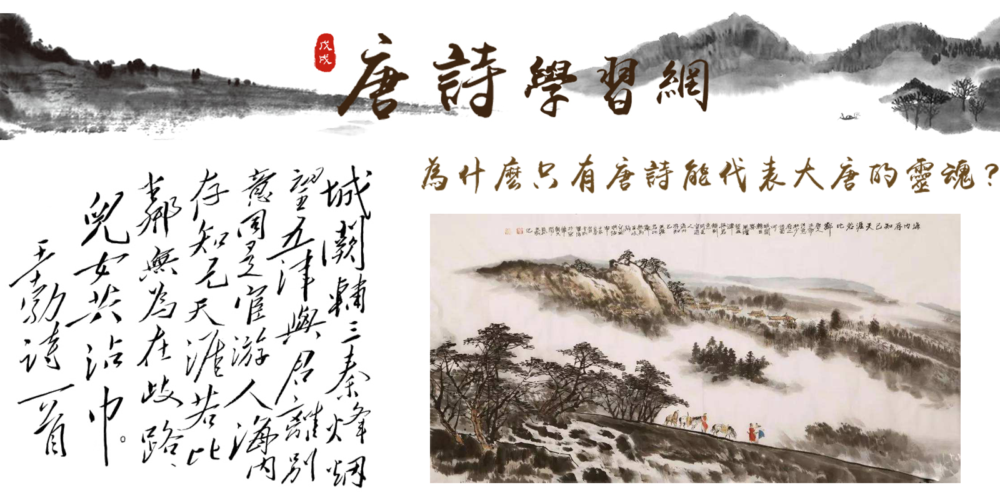

In our group, I worked as a graphic designer and web developer, using software including but not limited to Photoshop and Dreamweaver.
Graphic Design
As for the graphic design, I used a large number of Chinese elements, such as wood color, ink painting, calligraphy, etc. to emphasize the topic.

Web Design
The website was separated into 5 main parts, Introduction, Learning, Review, Practice, and Contact. To be looked more specifically, the courses are collected according to the period of the poets.